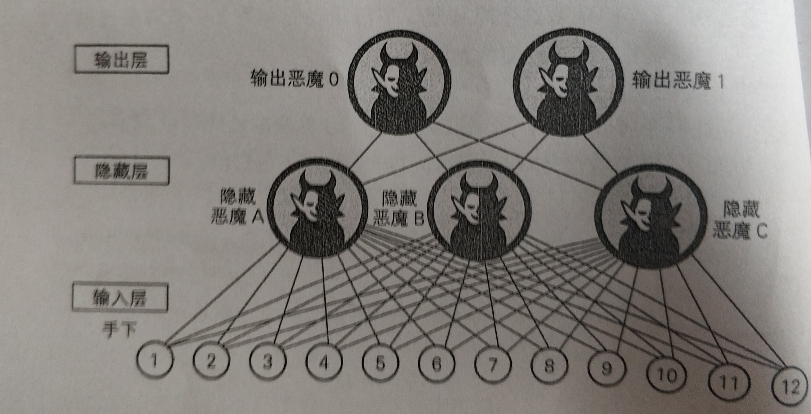
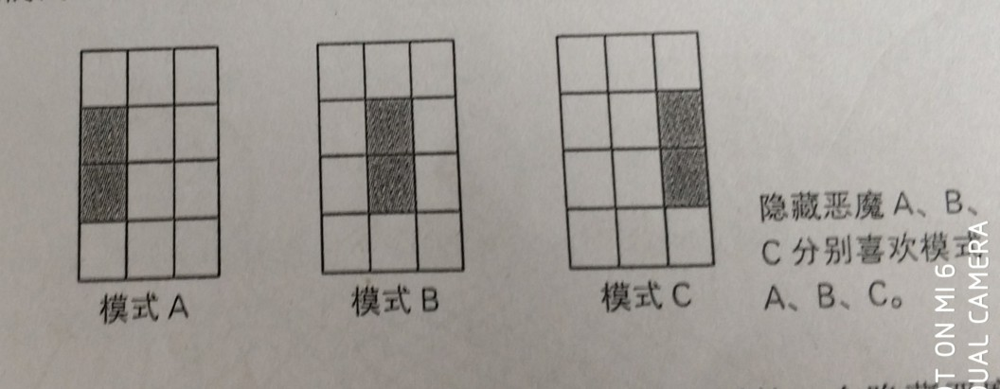
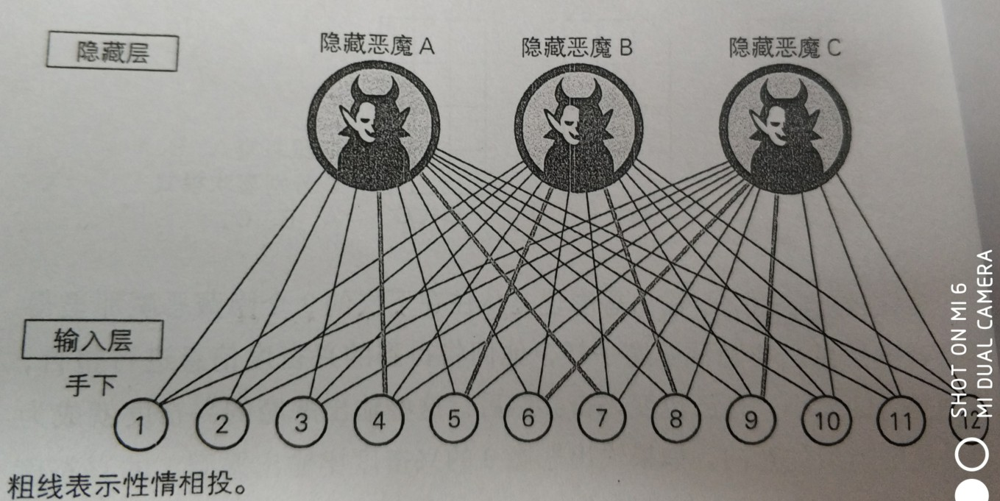

生物神经网络与深度学习
一、生物神经网络
生物神经构成及特性：
- 神经元形成网络
- 对于来自其他神经元传递过来的信号，如果和不超过某个固定大小的值(阈值)，则神经元不做任何反应
- 对于来自其他神经元传递过来的信号，如果和超过某个固定大小的值(阈值)，则神经元做出反应–（点火），并传递固定强度的信号
- 在第2步和第3步中，从多个神经元传递过来的信号之和中，每个信号对应的权重不同
神经元点火:
来自其他多个神经元的信号之和成为神经元的输入
如果这个信号之和超过神经元固有的阈值，则点火
神经元输入为固定值，可以使用数字1和0来表示，即使多个输入，输入值也是一个
$$
f(x)
\begin{cases}
无输入信号: &x=0\
有输入信号: &x=1
\end{cases}
$$
神经元在接受上一级神经元的输入时，具有权重，虽然每个神经元的输入值都相同，但权重不同
因此点火表达式：
$$
f(x)
\begin {cases}
无输出信号 (y=0): w_1x_1 + w_2x_2 + w_3x_3 < \theta \
有输出信号 (y=1): w_1x_1 + w_2x_2 + w_3x_3 \ge \theta \
\end{cases}
$$
此处的θ是该神经元固有的阈值
神经元点火图形表示：
函数表达式：
神经元加权输入
$$
y = u(w_1x_1 + w_2x_2 + w_3x_3 - \theta)
$$
插入图片2
单位阶跃函数：
$$
u(x) =
\begin {cases}
0 (z < 0) \
1 (z \ge 0)
\end {cases}
$$
神经元点火一般化
去除“生物”这个条件，那么0和1这个条件也是可以去除的，那么我们进行修正：
$$
y = a(w_1x_1 + w_2x_2 + w_3x_3 - \theta)
$$
其中，函数a为建模者自定义的函数，成为激活函数。x1 、x2、x3是模型所允许的任何数据，y为自定义函数a可以取到的任意值。
但是符号容易导致计算出错，因此用b替代θ，转化为：
$$
y = a(w_1x_1 + w_2x_2 + w_3x_3 + b)
$$
b被称为偏置，对于一般化的神经元，偏置可正可负。
ps：上式可与转化为向量的内积，扩展后为张量
$$
(w_1 , w_2 , w_3) * (x_1 , x_2 , x_3) + b
$$
Sigmoid函数
$$
\delta(z) = {1\over1+e^{-z}}
$$
激活函数之一，sigmoid函数具有以下优良性质：
1、输出值是大于0小于1的任何数；
2、该函数连续且光滑，处处可导。
二、神经网络构成
在上一小节中的神经单元，经过一定的顺序连接后，即构成了神经网络。
人工神经网络根据连接方式的不同，分为：
基础的阶层型神经网络和其发展来的卷积神经网络
阶层型神经网络
阶层性神经网络按层划分神经元，分为输入层、隐藏层、输出层

输入层：负责读取给予神经网络的信息，这个层的神经单元没有输入箭头，他们是简单的神经单元，只是将从数据的得到的值原样输出。
隐藏层：执行以下两步：
将神经单元的多个输入x1、x2 、x3、….xn等整理为加权输入z
$$
z = w_1x_1 + w_2x_2 + w_3x_3 +…+ w_nx_n + b
$$神经单元通过激活函数a(z)，将加权输入z转换为输出y
$$
y = a(z)
$$
输出层：与隐藏层一样执行信息处理操作1和2，并显示计算出的结果，接就是整个网络的输出。
深度学习：按照以上的神经单元来解释就是叠加了很多层的神经网络。
#### 三、一个简单的样例
这是一个识别手写数字１和０的神经网络，该网络的特征是：前一层的神经单元与下一层的所有神经单元都有连接，这样的层被称为全连接层。
第一部分：输入层
输入层有12个神经单元分别对应图像的每个像素，输入层神经单元的输入与输出相同，激活函数可以使用恒等函数 a(z) = z 来充当
第三部分：输出层
输出层采用两个神经单元，分别对1和0敏感。采用两个神经单元结构比较简单。可以采用sigmoid激活函数
第二部分：隐藏层
隐藏层具有特征提取功能，具体解释见下小节。
#### 四、隐藏层简析
首先，输入层的神经单元分别负责一个像素区域，当像素信号是OFF(值为0)时处于休眠状态，当信号时ON(值为1)时处于兴奋状态。让后输入层将本层的信号传输到隐藏层中。
接着，隐藏层的每一个神经单元都会介绍12个输入，但时每个输入的权值不同，例如三个隐藏单元一次对以下的三种模式敏感：

对应的连接：
